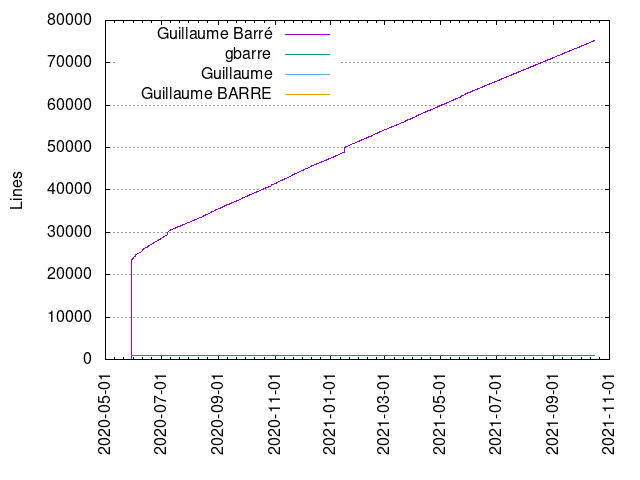
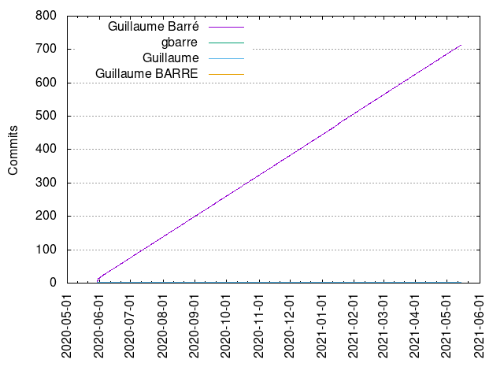

Authors
| Author | Commits (%) | + lines | - lines | First commit | Last commit | Age | Active days | # by commits |
|---|
| Guillaume Barré | 326 (98.79%) | 41613 | 21968 | 2020-05-29 | 2020-11-03 | 157 days, 6:04:29 | 159 | 1 |
| gbarre | 2 (0.61%) | 1025 | 0 | 2020-05-29 | 2020-05-29 | 1:06:45 | 1 | 2 |
| Guillaume | 2 (0.61%) | 78 | 47 | 2020-05-30 | 2020-05-30 | 0:00:45 | 1 | 3 |


| Month | Author | Commits (%) | Next top 5 | Number of authors |
|---|
| 2020-11 | Guillaume Barré | 5 (100.00% of 5) | | 1 |
| 2020-10 | Guillaume Barré | 62 (100.00% of 62) | | 1 |
| 2020-09 | Guillaume Barré | 60 (100.00% of 60) | | 1 |
| 2020-08 | Guillaume Barré | 62 (100.00% of 62) | | 1 |
| 2020-07 | Guillaume Barré | 62 (100.00% of 62) | | 1 |
| 2020-06 | Guillaume Barré | 61 (100.00% of 61) | | 1 |
| 2020-05 | Guillaume Barré | 14 (77.78% of 18) | gbarre, Guillaume | 3 |
| Year | Author | Commits (%) | Next top 5 | Number of authors |
|---|
| 2020 | Guillaume Barré | 326 (98.79% of 330) | gbarre, Guillaume | 3 |
| Domains | Total (%) |
|---|
| ac-versailles.fr | 326 (98.79%) |
|---|
| users.noreply.github.com | 2 (0.61%) |
|---|
| sd-136371.dedibox.fr | 2 (0.61%) |
|---|